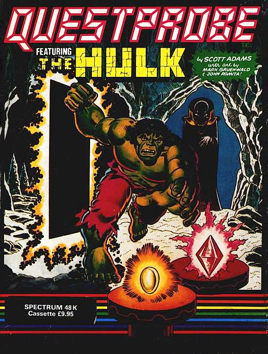
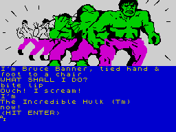

The Hulk


{kind=link}

| Publisher: | Adventure International |
| Price: | £9.95 |
| Year: | 1984 |
| Source: | CRASH, Issue 8 |

Ever since the early days of Automata adverts, comic strips have been associated with computer games and now a well-established adventure games company and a comics group have got together to bring the green mass of the Hulk to the adventure scene.
The Hulk is the first instalment of the Questprobe Series of games from Adventure International which will feature Marvel Comic characters including Spiderman and other Superheroes. Marvel Comics are publishing a comic called Questprobe featuring the Hulk.

You are Robert Bruce Banner, an ex-physicist irradiated by highly charged radioactive particles during the test detonation of a nuclear weapon. The radiation has a mutigenetic effect on Banner’s cellular structure causing him to transfer into the green-skinned monster known to all as the Hulk. Although the Hulk is clearly superhuman — he can leap to a height of 3,200 feet and withstand a temperature of 3000°F — it is possible to injure him. We are told he could not survive a near-hit with a nuclear warhead. Yes folks, even superheroes have no answer to these awesome weapons.
You begin as Banner tied up hand and foot to a chair and if you think you must flip to your alter ego to escape then I’d say you’re doing quite well for an adventure which comes in a box marked ‘Difficulty level: Moderate’. When in a room a gas soon permeates your skin turning it back to a Californian brown tan whilst flexing within are more gently rippling muscles.
What immediately strikes you is the richness and quality of the cartoon like graphics which depict your inflation to the green mass of the Hulk and subsequent demise to Bruce Banner. The detail is stunning. The graphics are not only tremendous but very fast, as is the response time and so the adventure flows along smoothly. There’s no beep on input but the routine is so fast and efficient that mistakes are rare.
Your task is to locate all the gems and find somewhere to store them. There are many interesting problems to tackle but the foremost is how to survive. But when death-defying attempts come to an end not all is lost. In true cartoon style the hero is never really killed and pressing D for down will bring you out of the clouds and back on terra firma.
Other cartoon characters in this adventure are the Ant-Man who when reduced to the size of an ant retains his original mass loading a super punch for a half-inch high figure, and Doctor Strange who can tap the universe’s ambient magical energy.
Vocabulary involves simple verb/noun couplings e.g., if you input WAVE FAN the reply AT WHAT? comes up and the program kindly gives you an example of the type of input is now requires — e.g. AT TREE.
When in need of assistance you may type HELP and more often than not be greeted with SORRY I CAN’T DO THAT BUT ASK FOR A SCOTT ADAMS HINT BOOK AT YOUR FAVORITE STORE!
My only criticism of this fine adventure is the repetitiveness that sets in once you’ve established the object of the game. As you move around collecting gems each of the three domes becomes indistinguishable as each is represented by the same graphic. To leave each dome the same routine is painstakingly followed.
The Hulk is a truly marvellous adventure with super graphics and a theme familiar to everyone.
COMMENTS
| Difficulty: | Average |
| Graphics: | All locations and some actions. Remain on screen. Excellent |
| Presentation: | Good |
| Input facility: | Average. Two word inputs |
| Response: | Very fast |
| General rating: | Good. |
| Atmosphere: | 8 |
| Vocabulary: | 7 |
| Logic: | 8 |
| Debugging: | 10 |
| Overall: | 8 |